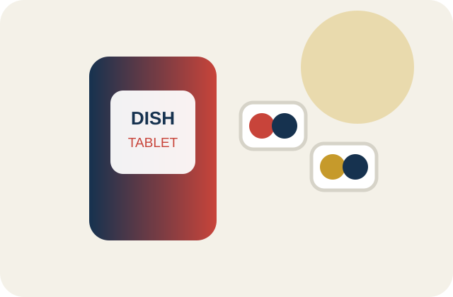

クイックルワイパーはマグネット式に買い替えるべき？ 通常型との違いを比較
シート装着床への密着すき間
選び方のポイント
小さな手間の差で選ぶ
読む →小さな手間の差で選ぶ

たくさんの口コミを読み比べなくても大丈夫。公式情報、使った人の声、気になる弱点まで整理して、あなたの暮らしに合う選び方をやさしく案内します。

ひとつの総合点ではなく、暮らし方に合う違いを見つけます。
一覧はマニフェストから自動同期します。
レビュー母数、現行SKU、公式仕様の整合まで確認します。
レビュー件数が不足している新製品を、平均点だけで無理に1位にはしません。調べ切れないものは「レビュー不足」と明示します。
調査方法を読む →